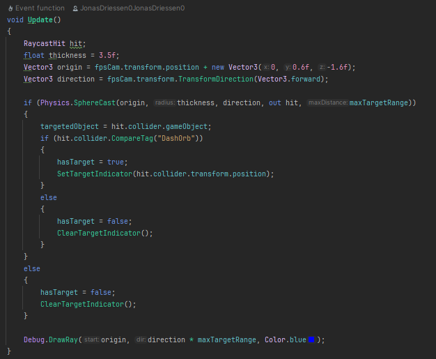

Unnamed Retro Shooter
An Experimental FPS Project


About the Project
Unnamed Retro Shooter is an experimental first-person shooter project that builds upon the mechanics of our previous Ultrakill project. This game is currently in its early prototyping stage, focusing on unique movement and shooting mechanics.
Key Features
Dash Orbs
One of the standout features of this game is the innovative Dash Orb system:
- Dash Orbs are special objects in the game world that players can interact with.
- When looking at a Dash Orb, it's targeted with a visual indicator.
- Players can dash towards the orb by pressing the "E" key.
- Dash Orbs can be chained together, allowing for fast and dynamic movement across the game world.
Development Process
The targeting system for Dash Orbs uses a spherecast to detect objects with the correct tag. When a valid target is found, it activates the target indicator.

Future Plans
While the game is still in early development, we have exciting plans for its future. We're continuously working on expanding the gameplay mechanics, level design, and overall player experience.